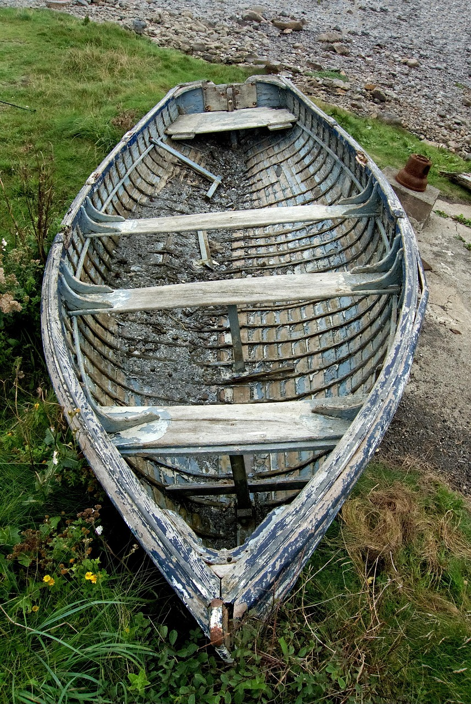
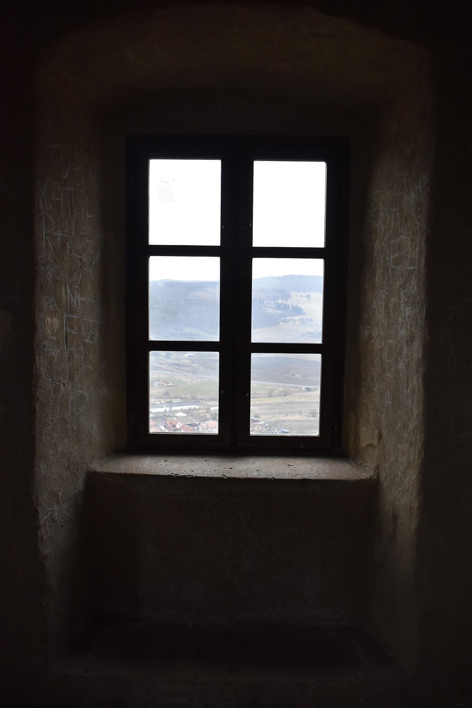

What Restoration Carpentry Actually Is
Restoration carpentry focuses on repairing, preserving, and rebuilding existing structures and woodwork: old framing repairs, rot replacement, window and sash work, trim replication, stair repairs, porch rebuilds, and historical detail preservation. Sometimes you’re restoring a historic home. Sometimes you’re doing practical “save the building” repairs on a not-so-historic place. The common thread is this: you’re working with what already exists, including the weird decisions made by past humans.
People imagine restoration as “beautiful old-house craftsmanship.” That happens — but the day-to-day is often messy: hidden water damage, out-of-square everything, layers of paint, odd materials, and surprises behind every wall. Your job is to make repairs that are structurally real and visually respectful.


What You Spend Time Doing
Restoration work is a loop of diagnosis → careful demolition → repair plan → fabrication → install → blend-in. The pace is rarely pure production because every building is its own problem set. You’ll measure, probe, open things up, discover something worse than expected, then figure out a repair that doesn’t create new problems.
- Diagnosis: finding the real source of damage (water, movement, rot, insects) before replacing anything.
- Selective demo: removing only what you must, without wrecking adjacent details you need to preserve.
- Repair + reinforcement: sistering framing, replacing sections, scarf joints, epoxy consolidation, stabilizing movement.
- Replication: matching profiles, milling parts, recreating old details so new work blends in.
- Fit in crooked reality: shimming, scribing, and tuning so “straight” looks right in an old structure.
Restoration is where you learn that most buildings are “alive.” They move, they settle, they leak, they warp — and your repair has to respect that.
Where the Pressure Comes From
Pressure comes from uncertainty and consequences. You don’t always know what you’ll find until you open things up. Estimates can get wrecked by hidden damage. Materials and matching details can be slow. And mistakes can destroy irreplaceable features.
There’s also “aesthetic pressure.” In restoration, the goal is often that your work is invisible — which means you’re judged by what people can’t notice. If you like that kind of quiet standard, you’ll thrive. If you need obvious wins every hour, this can feel slow.
What Traits Actually Matter
Restoration carpentry rewards patience, humility, and problem-solving more than raw speed. You’re not proving you’re fast — you’re proving you can think.
- Investigation mindset: you like figuring out “why” before you start fixing.
- Respect for old work: you can work around fragile details without smashing everything to make your life easier.
- Calm under surprises: you don’t panic when the wall opens and reality gets worse.
- Detail matching: you can replicate profiles, textures, and proportions so repairs don’t look like patches.
- Ethical discipline: you avoid shortcuts that hide problems instead of solving them.
Restoration is carpentry where “good enough” can literally cause future damage. Doing it right is often slower, but it lasts.
Who Should Probably Avoid It
Restoration can be amazing — but it’s not everyone’s mental environment.
- You hate uncertainty: if surprises feel like betrayal, restoration will annoy you daily.
- You need clean, predictable work: dust, rot, old paint layers, and weird fixes are part of the territory.
- You only like speed: restoration often requires careful work and waiting on materials or approvals.
- You get bored by “invisible wins”: success often looks like “nothing changed,” which is the point.
If you love carpentry but want a cleaner workflow, compare with cabinet making or finish carpentry. If you want speed and production, compare with framing or rough carpentry.
Next Step: Get a Signal, Then Compare
If restoration carpentry sounds interesting, don’t decide on aesthetics. Decide based on whether you can live inside the uncertainty: diagnosis, careful work, and problems that don’t come with instructions.
Run the Restoration Carpentry Fit Diagnostic first. Then compare paths from the Carpentry Hub or step back to the Trades Hub. If you want the full map, start at the homepage.